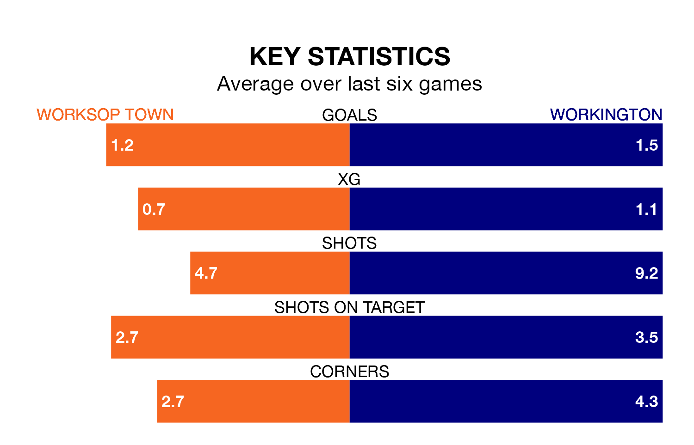

Worksop Town are heavy favourites to keep all three points at home in Saturday's kick-off against Workington.
Worksop, who sit sixth in the Northern Premier League with 36 games played, are priced at 1.3 to seal victory at the Windsor Food Service Stadium.
Sitting 10 places and 21 points behind them in the table, Workington are 5.7 to win with *Betting Company*, while the draw is at 4.3.
With 65 goals in 36 games so far this season, Worksop are scoring more than average in the league with 1.8 goals per game. And they are conceding fewer than average, letting in 40 goals at a rate of 1.1 per game.
Workington are also above average scorers, with 1.7 goals per game, compared to a league average of 1.6. They have conceded 2.0 goals per game.
Town are in mixed form in the Northern Premier League, with three wins and three losses from their last six games.
With two wins and four losses over that period, the visitors' form is worse – they have taken six points from 18, compared to the home team's nine.
Worksop's last match was on Monday, a 3-1 loss against Basford United.
Workington lost 3-2 against Atherton Collieries last time out, also on Monday.
Updated: 16:41 (UTC), 04/04/24